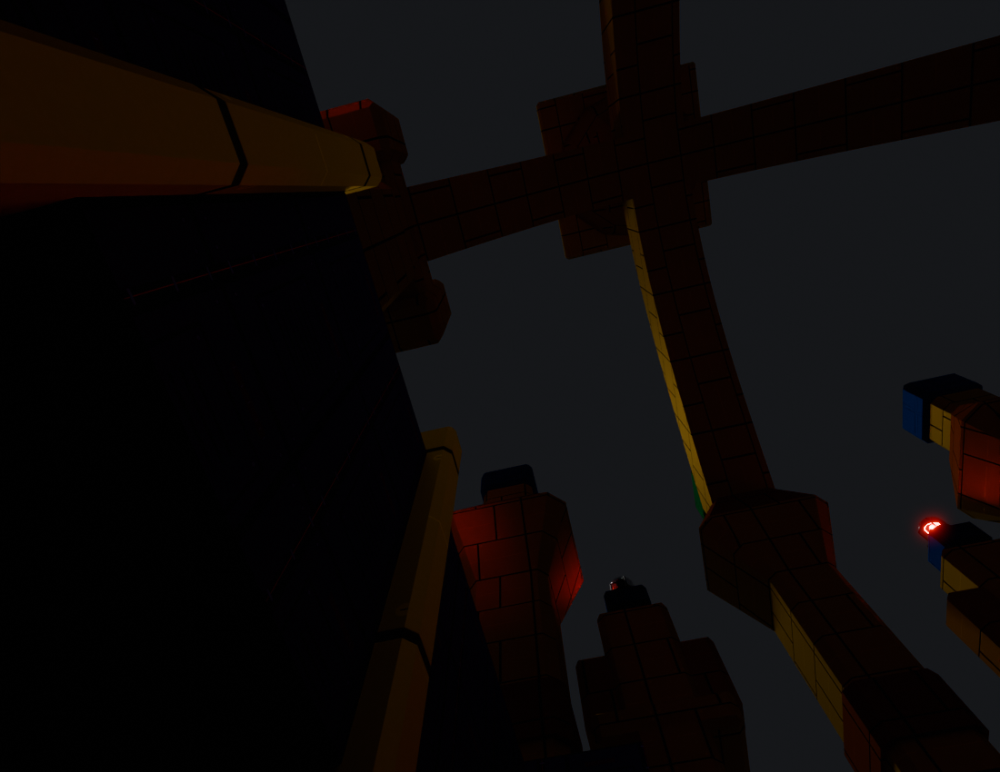
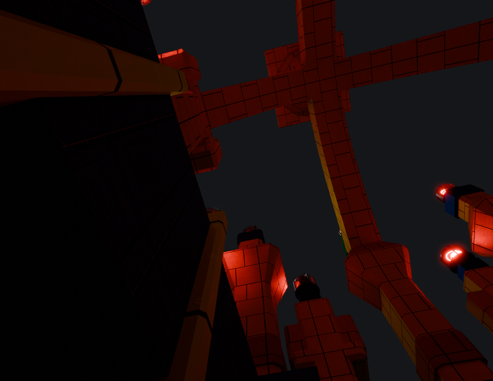
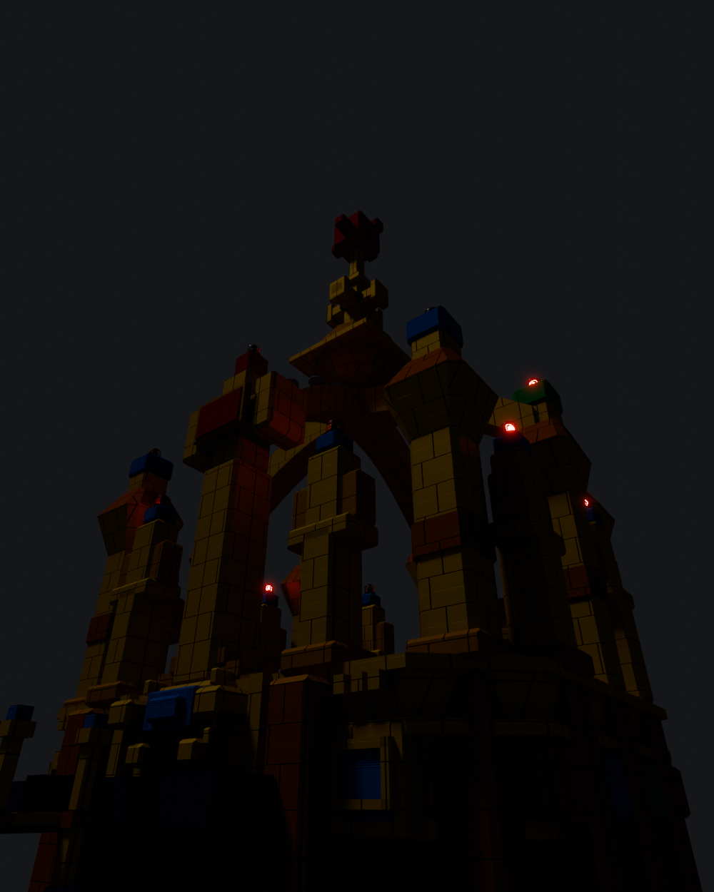
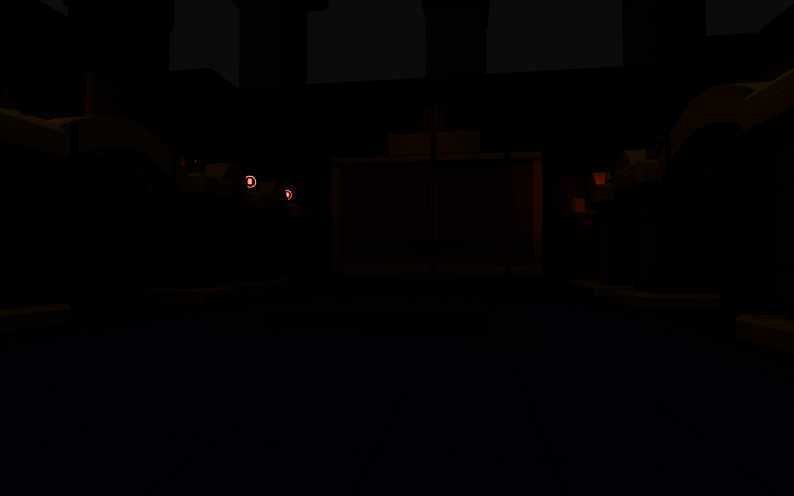
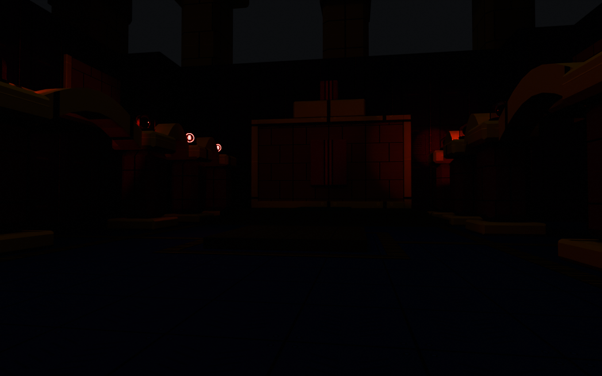
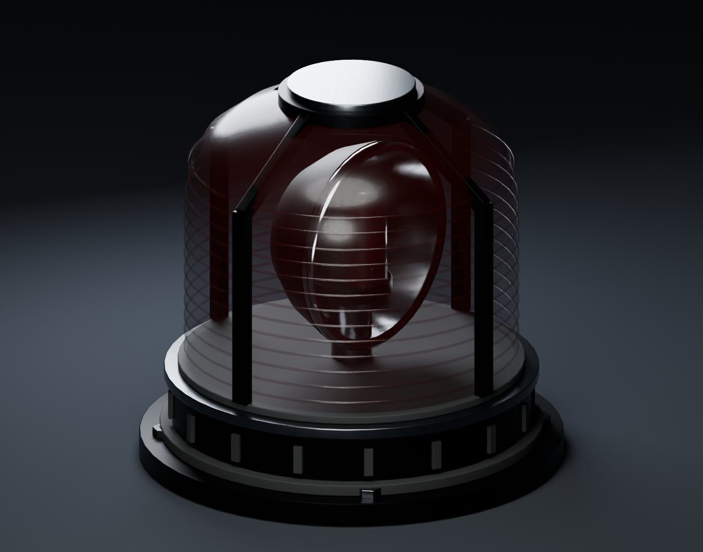
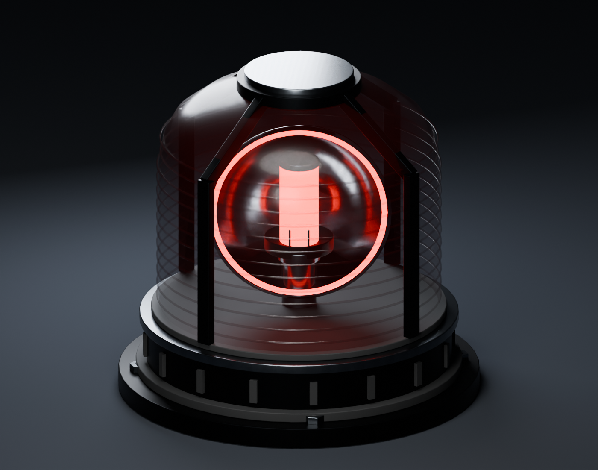
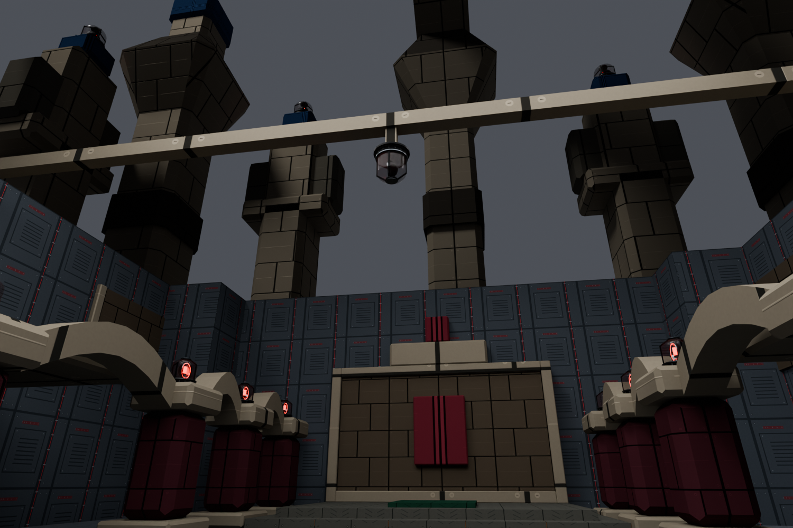
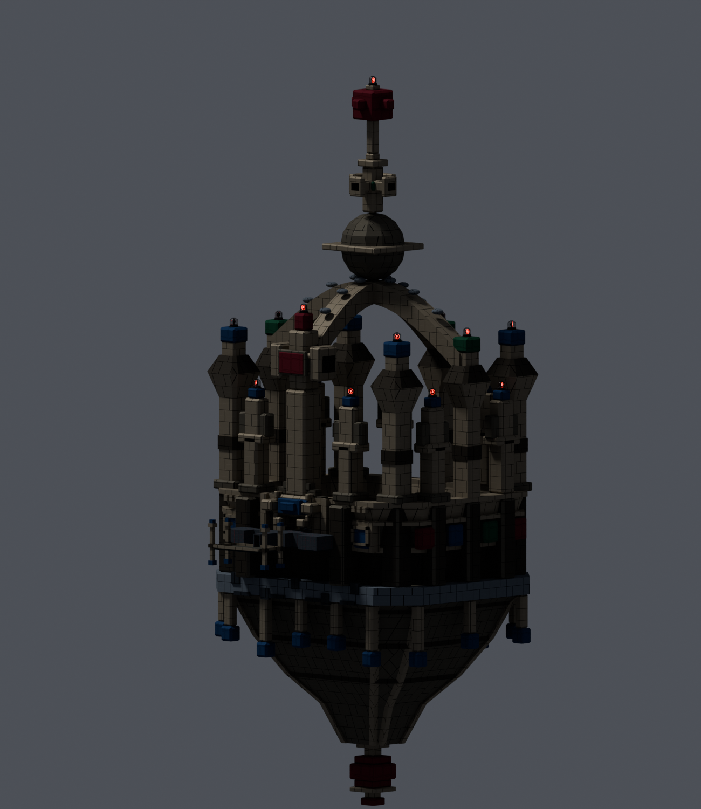
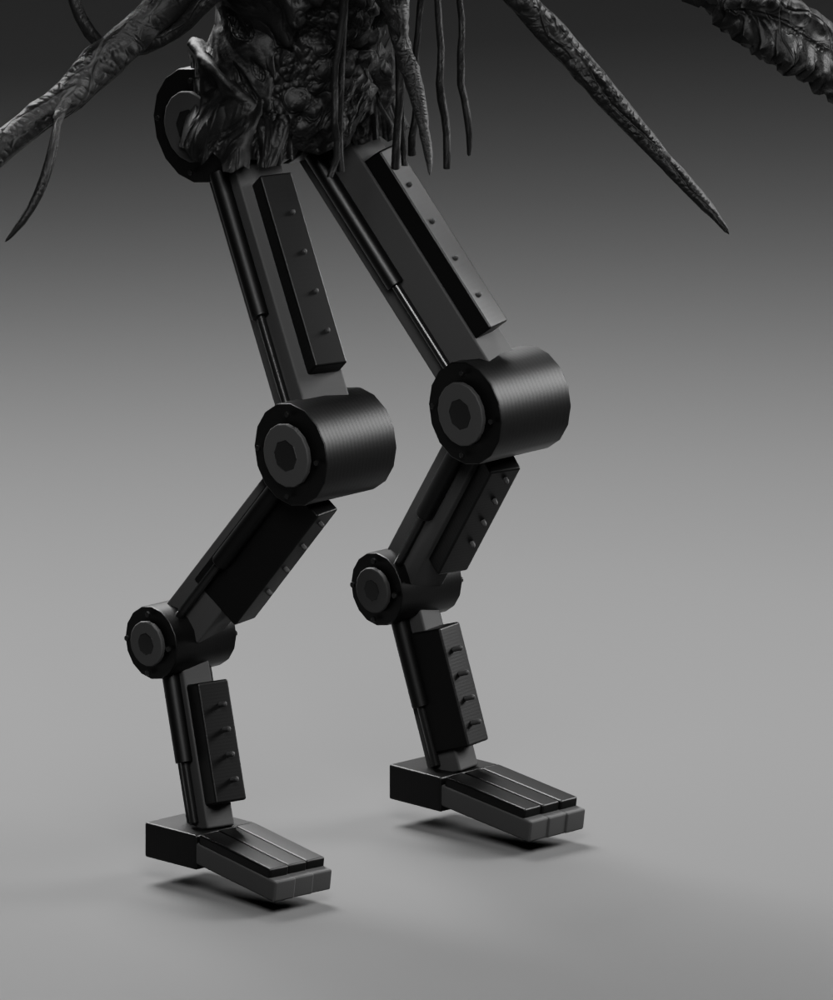

TOWER OF DOOM II · BLENDER MCP ART REVIEW
Crown emergency beacons
Bolted dark metal housings, ribbed red lenses, and a real rotating reflector replace the hanging cube and two floating lights. Every fixture activates from the existing alarm switch.
Ready for the next cleared build: random starting angles and a separate 4x glow for the 16 high crown points plus the apex. The hall alarms keep the brightness you liked. These latest changes are not deployed yet.
September 27: larger high alarms and real red spill
High lenses and reflectors doubled; glow increased fourfold from the last build. All 17 high fixtures now cast red light onto the crown arms. The hall lights retain their settings. Full build queued while BO3 runs. Current status and details.

Before: emission only
After: larger fixtures, stronger glow, red spillMatched Blender previews, not in-game screenshots. Native brightness and performance await the user playtest. Earlier comparisons below document previous iterations.
High crown lamps: 4x red glow
The 17 distant lamps have their own brighter material. The housing, red color, rotation and random starting angles stay consistent with the hall fixtures. Hall lamp brightness and spotlights are unchanged.
Previous high-crown glow
4x high-crown glowMatched view and rotation phase. Blender bloom and lighting are illustrative; native appearance awaits your playtest.
Stronger red sweep
The new settings give the hall spotlights four times the intensity, 900-unit reach, and a wider cone that can reach the floor. The red lamps have three times the emission. Thirteen hall lights and all thirty physical beacons retain the same activation, rotation and shutdown.

Previous settingsShort cones illuminate the upper architecture.
Current brightness / randomized directionsMatched camera, scene, exposure and fill; only alarm settings change.Each reflector starts at a different angle, then rotates at the same 1.5-second speed. All fixtures still activate together. These are representative random directions; the game picks fresh angles once per match on the server. Blender light power is illustrative, not BO3 brightness calibration. Pass notes and validation.
Original fixture design

Off · stationaryMounted housing, dark lamp, no emitted light.
On · red onlyThe reflector and lamp rotate together inside the fixed lens.The physical rotation
One revolution takes 1.5 seconds. Thirteen nearby hall fixtures also carry a tight red spotlight. The high fixtures now also carry their own shadowless red spill lights.
The crown seal stops the rotation and light. The fixtures stay mounted. The existing 30-second siren and separate power-switch behavior remain.
Open the four rotation phasesThirty mounted fixtures

Hall pillars and central pendantCurrent map geometry under neutral Blender review lighting.
Every crown point and the apexLarger fixtures fit the monumental crown. Runtime sky, spotlight effects and gameplay props are omitted.| Mount | Count | Size |
|---|
| Hall pillar capitals | 12 | 52 units wide |
| Existing central pendant | 1 | 52 units, inverted |
| Crown outer points | 16 | 208 units wide |
| Crown apex | 1 | 208 units wide |
Doppelgast leg material repair

Charcoal armor · dark steel · rubberThe legs now have real color, normal, specular and gloss maps, with UVs on the authored parts. The repair retains the original skeleton, upper body and eyes.
The mechanical parts have no emitted glow. Their beveled plates, piston rods and joint housings read through the dark metal finish.
View the full enemy roster